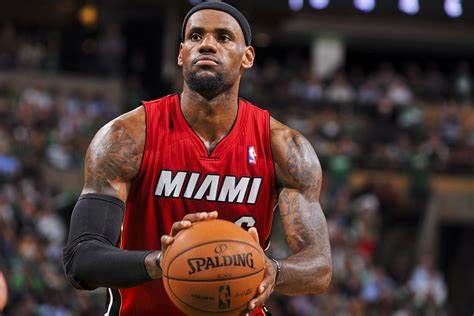
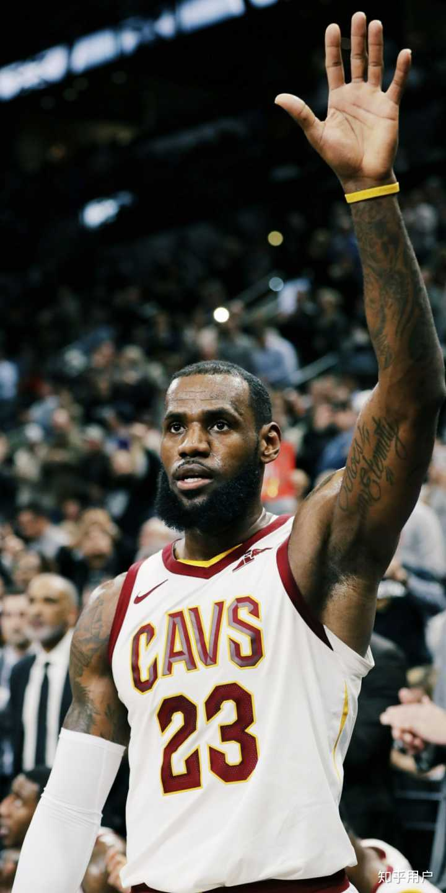

勒布朗·詹姆斯
勒布朗·瑞蒙·詹姆斯一世（英语：LeBron Raymone James Sr.，1984年12月30日－）是美国职业篮球运动员，目前效力于NBA洛杉矶湖人。
詹姆斯被公认是NBA历史上最伟大球员之一，并经常在史上最伟大篮球员的争论中被拿来与迈克尔·乔丹相互比较[1]。
职业生涯
- 克利夫兰骑士（2003－2010）
- 迈阿密热火（2010－2014）
- 重返克利夫兰骑士（2014－2018）
- 洛杉矶湖人（2018－至今）
达成记录
- 史上第一位对联盟30队都曾有三双演出的球员
- 历史上第一位连续900场常规赛得分上双的球员（在连续第867场得分上双时，超越迈克尔·乔丹成为第一）
- 第1位生涯累积30000分、10000篮板、10000助攻的球员
- 第1位生涯累积33000分、9000篮板、9000助攻的球员
- 第1位生涯累积30000分、8000篮板、8000助攻的球员
- 第1位生涯累积30000分、7000篮板、7000助攻的球员
- 季后赛总得分王（6911分）
- 唯一一个季后赛总得分超过6000分
- 第2位在同一年里囊括四大荣誉“年度MVP、总冠军、总决赛MVP、奥运金牌”的球员（2012年）（第一位是1992年的MJ）
- 2013年追平2000年的沙奎尔·奥尼尔在年度MVP票选的最高得分1207（获得121张第一名选票当中的120张）
- 最快达成10000分、2500篮板、2500助攻、600抢断、300盖帽（382场-10464分、2637篮板、2518助攻、676抢断、300盖帽）
- 最快达成20000分、5000篮板、5000助攻、1200抢断、600盖帽（726场-20007分、5244篮板、5008助攻、1255抢断、616盖帽）
- 第3位新秀赛季平均在20分5篮板5助攻（20.9分5.5篮板5.9助攻）
- 第2位在明星赛达成三双（2011）
- 第1位在NBA总冠军赛同时在得分、篮板、助攻、抢断、火锅等五项数据皆排名第一
- 明星赛史上累计投进最多三分球（23+）
- 第3位季后赛初登场三双
- 单季最多场季后赛得分在25分以上（2012年-21场）
- 达成连续1000场得分双位数（2020-12-30）
- 生涯得分双位数的场次已达成1262场，名列史上第4（仅次于贾巴尔的1509场、马龙的1441场和诺维茨基1373场）
NBA史上最年轻纪录
| 荣誉 |
年份 |
年龄 |
| 选秀状元 |
2003.6.26 |
18岁178天 |
| 年度新人王 |
2003-04赛季 |
19岁 |
| 新秀第一队 |
2003-04赛季 |
19岁 |
| 年度第二队 |
2004-05赛季 |
20岁 |
| 年度第一队 |
2005-06赛季 |
21岁 |
| 明星赛MVP |
2006.2.19 |
21岁51天 |
照片


评价
勒布朗·詹姆斯篮球智商极高、突破犀利，拥有出色的视野和传球技术，被认为是NBA有史以来最为全能的球员之一。